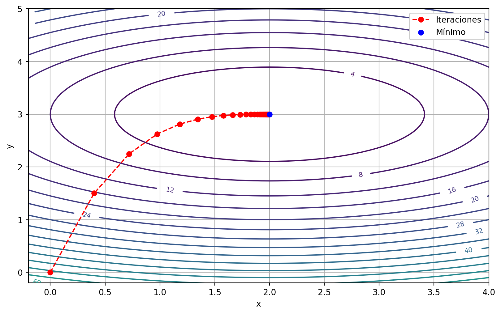
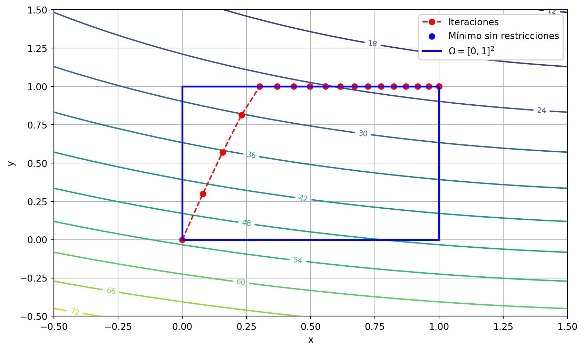
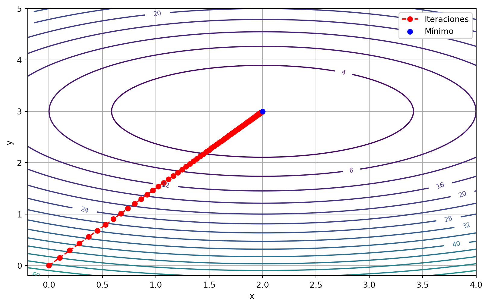

import numpy as np
def gradient_descent(f, grad_f, x_inicial, lr=0.1, max_iter=100,
tol_grad=None, tol_x=None, verbose=True):
x = np.array(x_inicial, dtype=float)
x_iter = [x.copy()]
f_iter = [f(x)]
for t in range(1, max_iter + 1):
grad = grad_f(x)
# Criterio de parada por norma del gradiente:
if tol_grad is not None and np.linalg.norm(grad) < tol_grad:
if verbose:
print(f"Parada en iteración {t}: |grad_f| < {tol_grad}")
t = t-1
break
x_new = x - lr * grad
# Criterio de parada por norma de diferencia entre iteraciones:
if tol_x is not None and np.linalg.norm(x_new - x) < tol_x:
if verbose:
print(f"Parada en iteración {t}: |x_t - x_(t+1)| < {tol_x}")
x = x_new
x_iter.append(x.copy())
f_iter.append(f(x))
break
x = x_new
x_iter.append(x.copy())
f_iter.append(f(x))
if verbose:
print(f"Iteración final: {t}")
print(f"Último punto: {x}")
print(f"Valor de f: {f(x)}")
return x_iter, f_iterMétodos de optimización
Capítulo 1 - Sección 5
\[ \def\NN{\mathbb{N}} \def\RR{\mathbb{R}} \def\media{\mathbb{E}} \def\calL{\mathcal{L}} \def\calG{\mathcal{G}} \def\aa{{\bf a}} \def\bb{{\bf b}} \def\cc{{\bf c}} \def\dd{{\bf d}} \def\hh{{\bf h}} \def\qq{{\bf q}} \def\xx{{\bf x}} \def\yy{{\bf y}} \def\zz{{\bf z}} \def\uu{{\bf u}} \def\vv{{\bf v}} \def\XX{{\bf X}} \def\TT{{\bf T}} \def\SS{{\bf S}} \def\bfg{{\bf g}} \def\bftheta{\boldsymbol{\theta}} \def\bflambda{\boldsymbol{\lambda}} \def\bfeta{\boldsymbol{\eta}} \def\bfmu{\boldsymbol{\mu}} \def\bfnu{\boldsymbol{\nu}} \def\bfSigma{\boldsymbol{\Sigma}} \def\bfone{\mathbf{1}} \def\argmin{\mathop{\mathrm{arg\,min\,}}} \def\argmax{\mathop{\mathrm{arg\,max\,}}} \]
En general, los problemas de optimización que surgen en el área de estadística y machine learning involucran funciones complejas, no lineales y/o de alta dimensión. Como consecuencia, obtener una solución exacta suele ser inalcanzable o innecesario. Esto último sucede, por ejemplo, cuando la solución exacta es costosa computacionalmente.
Aquí es cuando entran en juego los métodos de optimización numérica: algoritmos iterativos que aproximan una solución al problema de optimización. Su objetivo es construir una secuencia de puntos \(\{\xx_t \mid t\in\mathbb{N}_0\}\) que converja al punto óptimo \(\xx^*\), o lo suficientemente cerca de él.
Los métodos de optimización se definen a partir de las propiedades analíticas de la función objetivo. En esta sección, presentaremos algunos de los métodos fundamentales, construidos bajo distintas suposiciones de diferenciabilidad de \(f\), ya sea utilizando información de primer orden (gradiente), o incorporando información de segundo orden (matriz Hessiana).
1 Métodos de primer orden
En principio, consideraremos el caso sin restricciones \[ \min_{\xx\in\RR^n} f(\xx). \]
Si \(f\) es una función diferenciable, ya hemos visto que una condición necesaria para que \(\xx^\star\in\RR^n\) resuelve el problema de optimización es que \(\nabla f(\xx^\star)=\mathbf{0}\). Más aún, cuando \(f\) es convexa, la condición también es suficiente (ver Teorema 1.4.2).
Una idea fundamental para construir un algoritmo de optimización es aproximar \(f\) con modelos más simples y manejables. En particular, los métodos de primer orden se basan en la aproximación de Taylor de primer orden alrededor de un punto \(\xx_t\), a saber: \[ f(\xx) \approx f(\xx_{t}) + \langle \nabla f(\xx_{t}), \xx - \xx_{t} \rangle. \]
1.1 Método de descenso por gradiente
Una propiedad fundamental del vector gradiente \(\nabla f(\xx)\) es que es la dirección de máximo crecimiento de \(f\) a partir del punto \(\xx\). Por lo tanto, una idea básica para minimizar \(f\) es moverse en la dirección opuesta, \(-\nabla f(\xx)\), una determinada distancia, para luego volver a calcular el vector gradiente y repetir el descenso. Esto deriva en el primer método de optimización que estudiaremos: descenso por gradiente.
Método de descenso por gradiente
Dado un punto inicial \(\xx_0\in\text{dom}\,f\) y una tasa de aprendizaje \(\eta\):
repetir para \(t = 0,1,2,\dots\):
1° Calcular dirección \(-\nabla f(\xx_t)\)
2° Actualizar \(\xx_{t+1} := \xx_t - \eta \nabla f(\xx_t)\).
hasta que el criterio de parada se satisfaga.
Importante
Como criterio de parada, se puede fijar una cantidad máxima de iteraciones, aunque en general también se utilizan condiciones de convergencia, como que la norma del gradiente sea menor que un umbral prefijado, o que el cambio entre iteraciones sucesivas sea suficientemente pequeño. En fórmulas: \[ \|\nabla f(\xx_t)\|_2<\varepsilon_1\qquad\text{o}\qquad\|\xx_{t}-\xx_{t-1}\|_2<\varepsilon_2. \]
A continuación mostraremos una función en Python que implementa el algoritmo básico de descenso por gradiente, con los siguientes argumentos:
f: función objetivo.grad_f: función gradiente de \(f\).x_inicial: punto inicial.lr: (learning rate) tasa de aprendizaje \(\eta\).max_iter: cantidad máxima de iteraciones.tol_grad: tolerancia para norma del gradiente (opcional).tol_x: tolerancia para norma de diferencia entre iteraciones (opcional).
La salida es una lista con los puntos obtenidos en las iteraciones (x_iter), y los valores de la función (f_iter).
Ejemplo 1 Vamos a utilizar el método de descenso por gradiente para aproximarnos al valor mínimo de
\[ f(x,y)=2(x-2)^2+5(y-3)^2, \]
el cual sabemos que ocurre en \((2,3)\) (vértice del paraboloide elíptico). Necesitamos proporcionar el gradiente de \(f\), el cual es \[ \nabla f(x,y)=\left(4(x-2), 10(y-3)\right). \]
Mostrar código
import numpy as np
import matplotlib.pyplot as plt
import pandas as pd
# Función y gradiente:
def f(x):
return 2*(x[0] - 2)**2 + 5*(x[1] - 3)**2
def grad_f(x):
return np.array([4 * (x[0] - 2), 10 * (x[1] - 3)])
# Parámetros:
x_inicial = (0, 0)
lr = 0.05
max_iter = 100
tol_grad = 1e-3
tol_x = 1e-3
# Ejecutar GD:
x_iter, f_iter = gradient_descent(f, grad_f, x_inicial, lr, max_iter, tol_grad, tol_x)Parada en iteración 28: |x_t - x_(t+1)| < 0.001
Iteración final: 28
Último punto: [1.99613144 2.99999999]
Valor de f: 2.9931553533161224e-05La secuencia de valores obtenidas es:
Mostrar código
x_arr = np.array(x_iter)
x_vals = x_arr[:, 0]
y_vals = x_arr[:, 1]
tabla = pd.DataFrame({'x': x_vals, 'y': y_vals})
print(tabla) x y
0 0.000000 0.000000
1 0.400000 1.500000
2 0.720000 2.250000
3 0.976000 2.625000
4 1.180800 2.812500
5 1.344640 2.906250
6 1.475712 2.953125
7 1.580570 2.976562
8 1.664456 2.988281
9 1.731565 2.994141
10 1.785252 2.997070
11 1.828201 2.998535
12 1.862561 2.999268
13 1.890049 2.999634
14 1.912039 2.999817
15 1.929631 2.999908
16 1.943705 2.999954
17 1.954964 2.999977
18 1.963971 2.999989
19 1.971177 2.999994
20 1.976942 2.999997
21 1.981553 2.999999
22 1.985243 2.999999
23 1.988194 3.000000
24 1.990555 3.000000
25 1.992444 3.000000
26 1.993955 3.000000
27 1.995164 3.000000
28 1.996131 3.000000Por último, vamos a realizar la gráfica en el dominio \(\RR^2\) de la función.
Mostrar código
# Grilla para graficar:
x = np.linspace(-0.5, 7, 100)
y = np.linspace(-0.5, 5, 100)
X, Y = np.meshgrid(x, y)
def f_xy(x, y):
return f(np.array([x, y]))
Z = f_xy(X, Y)
# GRAFICA:
plt.figure(figsize=(10, 6))
# Curvas de nivel:
contours = plt.contour(X, Y, Z, levels=30, cmap='viridis')
plt.clabel(contours, inline=True, fontsize=8)
# Ruta de descenso por gradiente:
plt.plot(x_vals, y_vals, marker='o', linestyle='--', color='red', label='Iteraciones')
plt.scatter(2, 3, color='blue', label='Mínimo', zorder=5)
plt.xlabel('x')
plt.ylabel('y')
plt.xlim(-0.2, 4)
plt.ylim(-0.2, 5)
plt.legend(loc='upper right', facecolor='white', framealpha=1)
plt.grid(True)
plt.show()
1.1.1 Condición de Lipschitz para el gradiente
Dado que el descenso por gradiente opera considerando la aproximación de primer orden de \(f\), una gran clave sea preguntarse qué tan rápido deja de ser precisa dicha aproximación. Una respuesta natural a esta pregunta viene dada por la suavidad de \(f\).
Así, una vía estándar es imponer una cota sobre qué tan rápido puede cambiar el gradiente de la función al moverse ligeramente en cualquier dirección. Como consecuencia, al movernos en dirección de \(-\nabla f(\xx_t)\) desde \(\xx_t\), los nuevos gradientes que encontraremos en el camino seguirán estando mayormente alineados con \(\nabla f(\xx_t)\), lo cual significa que \(-\nabla f(\xx_t)\) seguirá siendo una buena dirección de descenso durante algún tiempo.
Específicamente, requeriremos que el gradiente \(\nabla f(x)\) sea \(L\)-Lipschitz continuo para alguna constante \(L \geq 0\). Esta condición a menudo se llama \(L\)-suavidad en la literatura. La presentamos ahora para funciones generales con dominios convexos arbitrarios \(\Omega\); hoy solo nos importará el caso \(\Omega = \mathbb{R}^{n}\).
Definición 1. (\(L\)-suavidad) Sea \(\Omega\) un conjunto convexo. Una función diferenciable \(f: \Omega \to \RR\) es \(L\)-suave si su gradiente es \(L\)-Lipschitz continuo, esto es, \[ \|\nabla f(\xx) - \nabla f(\yy)\|_{2} \leq L \|\xx - \yy\|_{2}, \qquad \forall \xx, \yy \in \Omega. \]
Una consecuencia inmediata de la \(L\)-suavidad es que la función admite una cota superior cuadrática. A continuación, esta propiedad será extremadamente útil para cuantificar la mejora de un paso del algoritmo de descenso por gradiente, lo cual a menudo se denomina lema del descenso del gradiente.
Teorema 1. (Cota superior cuadrática). Sea \(f: \Omega \to \mathbb{R}\) una función \(L\)-suave en un dominio convexo \(\Omega\). Entonces, podemos acotar superiormente la función \(f\) como \[ f(\yy) \leq f(\xx) + \langle \nabla f(\xx), \yy - \xx \rangle + \frac{L}{2} \|\yy - \xx\|_{2}^{2} \quad \forall \xx, \yy \in \Omega. \tag{2} \]
Mostrar detalles
Definamos la recta que conecta \(\xx\) con \(\yy\) como \(\gamma(t):=t\yy+(1-t)\xx\) y la restricción de \(f\) sobre dicha recta como \(h(t):=f(\gamma(t))\). El teorema fundamental del cálculo permite escribir \[ h(1)-h(0)=\int_0^1h'(t)\, dt. \]
Pero \(h(1)=f(\yy)\), \(h(0)=f(\xx)\) y \[ h'(t)=\nabla f(\gamma(t))\cdot \gamma'(t)=f(t\yy+(1-t)\xx)\cdot (\yy-\xx). \]
Reemplazando resulta \[ \begin{align*} f(\yy)-f(\xx)&=\int_0^1\nabla f(t\yy+(1-t)\xx)\cdot (\yy-\xx)\,dt\\ &=\int_0^1\left(\nabla f(t\yy+(1-t)\xx)-\nabla f(\xx)\right)\cdot (\yy-\xx)\,dt+\nabla f(\xx)\cdot (\yy-\xx)\\ &\leq \int_0^1\|\nabla f(t\yy+(1-t)\xx)-\nabla f(\xx)\|_2\|\yy-\xx\|_2\,dt+\nabla f(\xx)\cdot (\yy-\xx), \end{align*} \]
donde en el último paso se utilizó la desigualdad de Cauchy-Schwarz. Observar que el primer factor del integrando es el cambio de gradiente entre dos puntos, lo cual puede ser acotado en virtud de la \(L\)-suavidad; es decir \[ \|\nabla f(t\yy+(1-t)\xx)-\nabla f(\xx)\|_2\leq L\|t\yy+(1-t)\xx-\xx\|_2=tL\|\yy-\xx\|_2. \]
Finalmente nos queda \[ \begin{align*} f(\yy)-f(\xx)&\leq L\|\yy-\xx\|_2^2\int_0^1 t\,dt++\nabla f(\xx)\cdot (\yy-\xx)\\ &=\frac{L}{2}\|\yy-\xx\|_2^2++\nabla f(\xx)\cdot (\yy-\xx). \end{align*} \]
\(\blacksquare\)
Teorema 2. (Lema del descenso por gradiente) Sea \(f:\RR^n\to\RR\) una función \(L\)-suave. Entonces, para cualquier \(0 < \eta \leq \frac{1}{L}\), cada paso del método de descenso por gradiente garantiza
\[ f(\xx_{t+1}) \leq f(\xx_{t}) - \frac{\eta}{2} \|\nabla f(\xx_{t})\|_{2}^{2}. \]
Mostrar detalles
El lema nos asegura que para funciones \(L\)-suaves, existe una buena elección de la tasa de aprendizaje que permite garantizar que con cada paso del método de descenso por gradiente se mejorará el valor de la función, siempre que el punto actual no tenga un gradiente nulo.
Es importante remarcar que el resultado anterior no requiere que \(f\) sea convexa.
Además, si \(f\) está acotada inferiormente, el lema asegura que, en promedio, los gradientes de los puntos producidos por el método eventualmente deben volverse pequeños. En efecto, para la \(T\)-ésima iteración, la aplicación sucesiva del lema resulta en \[ f(\xx_T)\leq f(\xx_0)-\frac{\eta}{2}\sum_{t=0}^{T-1}\|\nabla f(\xx_t)\|_2^2. \] Entonces, para \(f^\star:=\inf f\) debe ocurrir \[ \sum_{t=0}^{T-1}\|\nabla f(\xx_t)\|_2^2\leq \frac{2}{\eta T}\left(f(\xx_0)-f^\star\right), \] tal que al menos algún valor del conjunto \(\left\{\|\nabla f (\xx_t)\|_2^2\right\} \mid 0\leq t\leq T-1\}\) está acotado superiormente por \(\tfrac{2}{\eta T}\left(f(\xx_0)-f^\star\right)\).
En la observación anterior, es importante notar que la cota obtenida depende del punto inicial \(\xx_0\). Cuanto más cercano esté a un punto óptimo, menor será el valor de \(f(\xx_0)-f^\star\) y, por lo tanto, de la cota. Esto resalta la importancia de una buena elección del punto inicial para acelerar la convergencia del método.
La cota superior cuadrática del Teorema 1 para \(\xx=\xx_t\) y \(\yy=\xx_{t+1}\) es \[ f(\xx_{t+1})\leq f(\xx_t)+\nabla f(\xx_t)\cdot(\xx_{t+1}-\xx_t)+\frac{L}{2}\|\xx_{t+1}-\xx_t\|_2^2. \]
Basta utilizar en el lado derecho la fórmula de descenso por gradiente \(\xx_{t+1}=\xx_t+\eta\nabla f(\xx_t)\): \[ \begin{align*} f(\xx_{t+1})&\leq f(\xx_t)-\eta\underbrace{\nabla f(\xx_{t})\cdot\nabla f(\xx_t)}_{\|\nabla f(\xx_t)\|_2^2}+\frac{L}{2}\eta^2\|\nabla f(\xx_t)\|_2^2\\ &=f(\xx_t)-\eta \left(1-\frac{L}{2}\eta\right)\|\nabla f(\xx_t)\|_2^2. \end{align*} \]
Cuando \(\eta\leq\frac{1}{L}\), el paréntesis es \(1-\frac{L}{2}\eta\geq\frac{1}{2}\). Realizando este cambio, se obtiene el resultado.
\(\blacksquare\)
1.1.2 Convergencia para funciones objetivos convexas
El Teorema 2 solo garantiza una tasa de convergencia para la norma del gradiente de la función objetivo, pero no dice nada acerca de la brecha \(f(\xx_t)-f^\star\). En otras palabras, aunque el gradiente pequeño es una necesidad para pensar en optimalidad, no es suficiente para asegurar que el valor de la función esté efectivamente cerca del óptimo.
Sin embargo, para funciones objetivo convexas, sí se puede establecer una razón de convergencia. Para ello, primero necesitamos enunciar el siguiente resultado.
Lema 3. Sea \(f:\RR^n\to\RR\) una función convexa y diferenciable. Entonces, para cualquier elección del tamaño de paso \(\eta\), cualquier par de puntos consecutivos \((\xx_t,\xx_{t+1})\) del método de descenso por gradiente satisfacen \[ f(\xx_{t}) \leq f(\xx) + \frac{1}{2\eta} \left( \|\xx - \xx_{t}\|_{2}^{2} - \|\xx - \xx_{t+1}\|_{2}^{2} + \|\xx_{t+1} - \xx_{t}\|_{2}^{2} \right) \qquad \forall \xx \in \mathbb{R}^{n}. \]
Teorema 4. Sea \(f:\RR^n\to\RR\) una función convexa y \(L\)-suave, con minimizador \(\xx^\star \in \RR^n\), y sea \(0 < \eta \leq \frac{1}{L}\). El método de descenso por gradiente verifica \[ f(\xx_{t}) - f(\xx^{*}) \leq \frac{\|\xx^\star - \xx_{0}\|_{2}^{2}}{2 t \eta} \qquad \forall t\in\NN. \]
Mostrar detalles
- Aunque el método de descenso por gradiente garantiza que el valor de la función se acerque al óptimo, no siempre asegura que los puntos iterados converjan rápidamente al punto óptimo \(\xx^\star\). Para obtener garantías más fuertes sobre la rapidez con la que las iteraciones se acercan al punto óptimo, se requieren condiciones adicionales.
Sean \((\xx_t,\xx_{t+1})\) dos puntos consecutivos de la iteración de descenso por gradiente. Entonces \(\|\xx_{t+1}-\xx_{t}\|_2^2=\eta\|\nabla f(\xx_t)\|_2^2\). Por Teorema 3, resulta \[ f(\xx_{t}) \leq f(\xx) + \frac{1}{2\eta} \left( \|\xx - \xx_{t}\|_{2}^{2} - \|\xx - \xx_{t+1}\|_{2}^{2}\right)+\frac{\eta}{2}\|\nabla f(\xx_t)\|_2^2, \qquad \forall \xx \in \mathbb{R}^{n}. \]
Pero la \(L\)-suavidad de \(f\) nos permite usar el Teorema 2; para \(0\leq\eta\leq\frac{1}{L}\) se cumple \(\frac{\eta}{2}\|\nabla f(\xx_t)\|_2^2\leq f(\xx_t)-f(\xx_{t+1})\). Reemplazando en la expresión anterior, resulta \[ f(\xx_{t+1})\leq f(\xx)+ \frac{1}{2\eta} \left( \|\xx - \xx_{t}\|_{2}^{2} - \|\xx - \xx_{t+1}\|_{2}^{2}\right),\qquad\forall\xx\in\RR^n. \]
Sumando sobre \(t=0,1,\cdot,T-1\), y teniendo en cuenta que el lado derecho es telescópico, obtenemos \[ \sum_{t=0}^{T-1}f(\xx_{t+1})\leq Tf(\xx)+\frac{1}{2\eta}\left(\|\xx-\xx_0\|_2^2-\|\xx-\xx_T\|_2^2\right). \]
Ahora bien, vamos a aplicar esta última desigualdad a \(\xx=\xx^\star\) y descartar el término \(\|\xx-\xx_T\|_2^2\) (esto último se puede hacer porque está restando):
\[ \sum_{t=0}^{T-1}f(\xx_{t+1})\leq Tf(\xx^{\star})+\frac{1}{2\eta}\|\xx^{\star}-\xx_0\|_2^2. \]
Por último, vamos a usar el hecho que \(Tf(\xx_T)\leq\sum_{t=0}^{T-1}f(\xx_{t+1})\); esto debido a que el Teorema 2 asegura que \(f(\xx_t)\) es no creciente en \(t\). Así, finalmente obtenemos \[ T(f(\xx_T)-f(\xx^{\star}))\leq \frac{1}{2\eta}\|\xx^{\star}-\xx_0\|_2^2. \]
\(\blacksquare\)
1.2 Método de descenso por gradiente proyectado
Vamos a ver ahora como adaptar el método de descenso por gradiente a problemas de optimización con restricciones de la forma
\[ \min_{\xx \in \Omega} f(\xx). \]
En este caso, supondremos que \(f\) es diferenciable y que el conjunto factible \(\Omega\) es cerrado y convexo. La forma natural de extender el método de descenso por gradiente consiste en proyectar los puntos obtenidos sobre \(\Omega\), de manera tal de asegurarnos que la sucesión \(\{\xx_t\mid t\in\mathbb{N}_0\}\subset\Omega\).
Método de descenso por gradiente proyectado
Dado un punto inicial \(\xx_0\in\Omega\) y una tasa de aprendizaje \(\eta > 0\):
repetir para \(t = 0,1,2,\dots\):
1° Calcular dirección \(-\nabla f(\xx_t)\).
2° Calcular paso de gradiente: \(\yy_{t+1} := \xx_t - \eta \nabla f(\xx_t)\).
3° Proyectar sobre \(\Omega\): \(\xx_{t+1} := \Pi_{\Omega}(\yy_{t+1})\).
hasta que se satisfaga el criterio de parada.
Vamos a implementar en Python este método. Cabe destacar que el paso de proyección es por sí mismo un problema de optimización, cuyo objetivo es hallar el punto más cercano dentro del conjunto factible \(\Omega\). En algunos casos, como por ejemplo \(\Omega=[0,1]^n\), el conjunto factible tiene una forma especial que permite resolver la proyección de forma explícita y eficiente.
Por lo tanto, en relación al método de descenso por gradiente, se agrega un nuevo argumento:
proy: función de proyección sobre el conjunto factible.
import numpy as np
def projected_gradient_descent(f, grad_f, x_inicial, proy,
lr=0.1, max_iter=100,
tol_grad=None, tol_x=None,
verbose=True):
x = np.array(x_inicial, dtype=float)
x_iter = [x.copy()]
f_iter = [f(x)]
for t in range(1, max_iter + 1):
grad = grad_f(x)
# Criterio de parada por norma del gradiente:
if tol_grad is not None and np.linalg.norm(grad) < tol_grad:
if verbose:
print(f"Parada en iteración {t}: |grad_f| < {tol_grad}")
t = t-1
break
y = x - lr * grad
x_new = proy(y)
# Criterio de parada por norma de diferencia entre iteraciones:
if tol_x is not None and np.linalg.norm(x_new - x) < tol_x:
if verbose:
print(f"Parada en iteración {t}: |x_t - x_(t+1)| < {tol_x}")
x = x_new
x_iter.append(x.copy())
f_iter.append(f(x))
break
x = x_new
x_iter.append(x.copy())
f_iter.append(f(x))
if verbose:
print(f"Iteración final: {t}")
print(f"Último punto: {x}")
print(f"Valor de f: {f(x)}")
return x_iter, f_iterEjemplo 2 Vamos a utilizar el método de descenso por gradiente proyectado para aproximarnos al valor mínimo de
\[ f(x,y)=2(x-2)^2+5(y-3)^2, \]
sobre el conjunto factible \(\Omega=[0,1]\times[0,1]\). En este caso la función de proyección es sencilla: consiste en recortar cada coordenada al intervalo correspondiente; es decir \[ \Pi_{[0,1]\times[0,1]}(x,y):=\left(\min(\max(x,0),1),\min(\max(y,0),1)\right). \]
Esto se calcula rápidamente con la función np.clip de NumPy.
Mostrar código
import numpy as np
import matplotlib.pyplot as plt
import pandas as pd
# Función y gradiente:
def f(x):
return 2*(x[0] - 2)**2 + 5*(x[1] - 3)**2
def grad_f(x):
return np.array([4 * (x[0] - 2), 10 * (x[1] - 3)])
# Proyección:
def proy(x):
return np.clip(x, 0, 1)
# Parámetros:
x_inicial = (0, 0)
lr = 0.01
max_iter = 20
tol_grad = 1e-3
tol_x = 1e-3
# Ejecutar PGD:
x_iter, f_iter = projected_gradient_descent(f, grad_f, x_inicial, proy, lr, max_iter, tol_grad, tol_x)Parada en iteración 18: |x_t - x_(t+1)| < 0.001
Iteración final: 18
Último punto: [1. 1.]
Valor de f: 22.0La secuencia de valores obtenidas es:
Mostrar código
x_arr = np.array(x_iter)
x_vals = x_arr[:, 0]
y_vals = x_arr[:, 1]
tabla = pd.DataFrame({'x': x_vals, 'y': y_vals})
print(tabla) x y
0 0.000000 0.000
1 0.080000 0.300
2 0.156800 0.570
3 0.230528 0.813
4 0.301307 1.000
5 0.369255 1.000
6 0.434484 1.000
7 0.497105 1.000
8 0.557221 1.000
9 0.614932 1.000
10 0.670335 1.000
11 0.723521 1.000
12 0.774580 1.000
13 0.823597 1.000
14 0.870653 1.000
15 0.915827 1.000
16 0.959194 1.000
17 1.000000 1.000
18 1.000000 1.000Por último, vamos a realizar la gráfica en el dominio \(\RR^2\) de la función.
Mostrar código
# Grilla para graficar:
x = np.linspace(-0.5, 1.5, 100)
y = np.linspace(-0.5, 1.5, 100)
X, Y = np.meshgrid(x, y)
Z = f(np.array([X, Y]))
# GRAFICA:
plt.figure(figsize=(10, 6))
# Curvas de nivel:
contours = plt.contour(X, Y, Z, levels=10, cmap='viridis')
plt.clabel(contours, inline=True, fontsize=8)
# Ruta de descenso por gradiente proyectado:
plt.plot(x_vals, y_vals, marker='o', linestyle='--', color='red', label='Iteraciones')
plt.scatter(2, 3, color='blue', label='Mínimo sin restricciones', zorder=5)
# Caja [0,1]^2 en azul:
caja_x = [0, 1, 1, 0, 0]
caja_y = [0, 0, 1, 1, 0]
plt.plot(caja_x, caja_y, color='blue', linewidth=2, linestyle='-', label='$\Omega = [0,1]^2$')
plt.xlabel('x')
plt.ylabel('y')
plt.legend(loc='upper right', facecolor='white', framealpha=1)
plt.grid(True)
plt.xlim(-0.5, 1.5)
plt.ylim(-0.5, 1.5)
plt.show()<>:19: SyntaxWarning: invalid escape sequence '\O'
<>:19: SyntaxWarning: invalid escape sequence '\O'
C:\Users\isaias\AppData\Local\Temp\ipykernel_20124\151874914.py:19: SyntaxWarning: invalid escape sequence '\O'
plt.plot(caja_x, caja_y, color='blue', linewidth=2, linestyle='-', label='$\Omega = [0,1]^2$')
1.2.1 Resultados de convergencia
Bajo condiciones similares a las del método sin restricciones, el método proyectado también garantiza convergencia del valor de la función objetivo.
Teorema 5. (Lema del descenso por gradiente proyectado) Sea \(f:\RR^n\to\RR\) una función \(L\)-suave. Entonces, para cualquier \(0 < \eta \leq \frac{1}{L}\), cada paso del método de descenso por gradiente proyectado garantiza
\[ f(\xx_{t+1}) \leq f(\xx_{t}) - \frac{\eta}{2} \|\nabla f(\xx_{t})\|_{2}^{2}+\frac{1}{2\eta}\|\yy_{t+1}-\xx_{t+1}\|_2^2. \]
Mostrar detalles
Como en la demostración del Teorema 2, partimos de la cota superior cuadrática del Teorema 1 para \(\xx=\xx_t\) y \(\yy=\xx_{t+1}\): \[ f(\xx_{t+1})\leq f(\xx_t)+\nabla f(\xx_t)\cdot(\xx_{t+1}-\xx_t)+\frac{L}{2}\|\xx_{t+1}-\xx_t\|_2^2. \]
En este caso, utilizaremos la fórmula \(\yy_{t+1}=\xx_t+\eta\nabla f(\xx_t)\) para sustituir \(\nabla f(\xx_t)\) en el segundo término de la suma, obteniendo
\[ f(\xx_{t+1})\leq f(\xx_t)-\frac{1}{\eta}(\yy_{t+1}-\xx_t)\cdot(\xx_{t+1}-\xx_t)+\frac{L}{2}\|\xx_{t+1}-\xx_t\|_2^2. \]
Ahora, en \((\yy_{t+1}-\xx_t)\cdot(\xx_{t+1}-\xx_t)\) usaremos la identidad \(\uu\cdot\vv=\frac{1}{2}\left(\|\uu\|_2^2+\|\vv\|_2^2-\|\uu-\vv\|_2^2\right)\). Además, para el último término usaremos que \(L\leq \frac{1}{\eta}\). Resulta
\[ \begin{align*} f(\xx_{t+1})&\leq f(\xx_t)-\frac{1}{2\eta}\left(\|\yy_{t+1}-\xx_t\|_2^2+\|\xx_{t+1}-\xx_t\|_2^2-\|\yy_{t+1}-\xx_{t+1}\|_2^2\right)+\frac{1}{2\eta}\|\xx_{t+1}-\xx_t\|_2^2\\ &=f(\xx_t)-\frac{1}{2\eta}\left(\|\yy_{t+1}-\xx_t\|_2^2-\|\yy_{t+1}-\xx_{t+1}\|_2^2\right)\\ &\leq f(\xx_t)-\frac{1}{2\eta}\left(\eta^2\|\nabla f(\xx_t)\|_2^2-\|\yy_{t+1}-\xx_{t+1}\|_2^2\right)\\ &=f(\xx_t)-\frac{\eta}{2}\|\nabla f(\xx_t)\|_2^2+\frac{1}{2\eta}\|\yy_{t+1}-\xx_{t+1}\|_2^2. \end{align*} \]
\(\blacksquare\)
A pesar de que en este lema, en relación con el lema del descenso por gradiente (Teorema 2), aparece el término adicional \(\frac{1}{2\eta}\|\yy_{t+1}-\xx_{t+1}\|_2^2\), este puede ser cancelado al hacer la suma sobre \(t\), derivando en el mismo resultado de convergencia del Teorema 4 para este método:
Teorema 6. Sea \(f:\RR^n\to\RR\) una función convexa y \(L\)-suave, con minimizador \(\xx^\star\in\Omega\), donde \(\Omega\subset\RR^n\) es un conjunto cerrado y convexo, y sea \(0<\eta\leq\frac{1}{L}\). El método de descenso por gradiente proyectado verifica
\[ f(\xx_t) - f(\xx^\star) \leq \frac{\|\xx_0 - \xx^\star\|_2^2}{2\eta t}, \qquad \forall t\in\NN. \]
1.3 Método de descenso por gradiente estocástico
Presentaremos una variante del descenso por gradiente que resulta particularmente útil cuando la función objetivo se expresa como una suma de muchas funciones, es decir,
\[ f(\xx) = \frac{1}{N} \sum_{i=1}^{N} f_i(\xx). \]
Esto sucede habitualmente en problemas de aprendizaje supervisado, donde la función a optimizar es un costo que puede definirse como suma de los costos individuales de cada dato.
El método de descenso por gradiente requiere calcular el gradiente completo \(\nabla f(\xx)\) en cada paso. En cambio, la versión estocástica reemplaza ese gradiente por una estimación basada en una muestra, lo cual reduce drásticamente el costo computacional por iteración. Esto lo vuelve especialmente atractivo en contextos con grandes volúmenes de datos (big data), donde calcular el gradiente total puede ser inviable.
Método de descenso por gradiente estocástico
Dado un punto inicial \(\xx_0\) y una tasa de aprendizaje \(\eta\):
repetir para \(t = 0,1,2,\dots\):
1° Elegir un índice \(i_t\) al azar de \(\{1,\dots,N\}\).
2° Calcular el gradiente estocástico \(\nabla f_{i_t}(\xx_t)\).
3° Actualizar \(\xx_{t+1} := \xx_t - \eta \nabla f_{i_t}(\xx_t)\).
hasta que se satisfaga un criterio de parada.
Importante
Otra variante ampliamente utilizada en la práctica es el descenso por gradiente mini-batch, donde en lugar de usar un único índice \(i_t\), se toma un subconjunto aleatorio (mini-batch) de índices para estimar el gradiente mediante el promedio de los gradientes evaluados en ese lote. Es decir, el 2° paso del algoritmo anterior adopta la forma
\[ \frac{1}{\#(B_t)}\sum_{i\in B_t}\nabla f_i(\xx_t), \]
donde \(\#(B_t)\) denota el tamaño del mini-batch.
Esto permite un equilibrio entre la alta varianza del método estocástico y el alto costo computacional del método de descenso por gradiente completo. Además, el uso de mini-batches es especialmente adecuado para estrategias computacionales tales como la programación paralela.
2 Métodos de segundo orden
Vamos a iniciar el estudio de los métodos de segundo orden, que además del gradiente utilizan también la Hessiana (la segunda derivada) de la función objetivo.
2.1 Método de Newton
Para el caso sin restricciones,
\[ \min_{x\in\RR^n} f(x), \]
asumimos que \(f\) es una función dos veces diferenciable. En este caso, podemos analizar qué sucede si, en lugar de la aproximación de Taylor de primer orden, usamos la expansión de segundo orden alrededor de un punto \(\xx_t\):
\[f(\xx)\sim f(\xx_t)+\nabla f(\xx_t)\cdot(\xx-\xx_t)+\frac{1}{2}(\xx-\xx_t)\cdot \nabla^2 f(\xx_t)(\xx-\xx_t),\]
donde \(\nabla^2 f(\xx_t)\) es la matriz Hessiana de \(f\) en \(\xx_t\).
Teniendo en cuenta que la aproximación anterior es una función de \(\xx\), al analizar \(\nabla f(\xx)=\mathbf{0}\) se obtiene inmediatamente la ecuación \[ \nabla f(\xx_t)+\nabla^2 f(\xx_t)(\xx-\xx_t)=\mathbf{0}, \]
tal que
\[ \xx=\xx_t-\left[\nabla^2f(\xx_t)\right]^{-1}\nabla f(\xx_t). \]
Comparando esto con el método de descenso por gradiente, vemos que al usar una aproximación de Taylor de segundo orden la dirección de descenso cambia a \(-\left[\nabla^2f(\xx_t)\right]^{-1}\nabla f(\xx_t)\), lo cual requiere la suposición de que la matriz Hessiana \(\nabla^2 f(\xx_t)\) sea invertible.
El cambio de \(-\nabla f(\xx_t)\) del método de descenso por gradiente a \(-\left[\nabla^2f(\xx_t)\right]^{-1}\nabla f(\xx_t)\) se conoce como precondicionamiento del gradiente por la Hessiana. Esto permite definir la generalización natural del método de descenso por gradiente al contexto de segundo orden.
Método de Newton (de paso reducido)
Dado un punto inicial \(\xx_0 \in \mathrm{dom}\, f\) y una tasa de aprendizaje \(\eta >0\):
repetir para \(t=0,1,2,\dots\):
1° Calcular la matriz Hessiana \(\nabla^2 f(\xx_t)\) y el gradiente \(\nabla f(\xx_t)\).
2° Actualizar \(\xx_{t+1} := \xx_t-\eta\left[\nabla^2 f(\xx_t)\right]^{-1}\nabla f(\xx_t)\).
hasta que se cumpla un criterio de parada.
Si \(\eta=1\), se denomina simplemente método de Newton.
En este caso, la implementación en Python requiere el argumento adicional:
hess_f: función Hessiana de \(f\).
def newton_method(f, grad_f, hess_f, x_inicial, lr=0.1,
max_iter=100, tol_grad=None, tol_x=None, verbose=True):
x = np.array(x_inicial, dtype=float)
x_iter = [x.copy()]
f_iter = [f(x)]
for t in range(1, max_iter + 1):
grad = grad_f(x)
hess = hess_f(x)
# Criterio de parada por norma del gradiente:
if tol_grad is not None and np.linalg.norm(grad) < tol_grad:
if verbose:
print(f"Parada en iteración {t}: |grad_f| < {tol_grad}")
t = t-1
break
try:
p = -np.linalg.solve(hess, grad)
except np.linalg.LinAlgError:
if verbose:
print(f"Hessiana no invertible en iteración {t}")
break
x_new = x + lr * p
# Criterio de parada por norma de diferencia entre iteraciones:
if tol_x is not None and np.linalg.norm(x_new - x) < tol_x:
if verbose:
print(f"Parada en iteración {t}: |x_t - x_(t+1)| < {tol_x}")
x = x_new
x_iter.append(x.copy())
f_iter.append(f(x))
break
x = x_new
x_iter.append(x.copy())
f_iter.append(f(x))
if verbose:
print(f"Iteración final: {t}")
print(f"Último punto: {x}")
print(f"Valor de f: {f(x)}")
return x_iter, f_iterEjemplo 3 Vamos a utilizar el método de Newton para aproximarnos al valor mínimo de
\[ f(x,y)=2(x-2)^2+5(y-3)^2, \]
para poder comparar con el Ejemplo 1. La Hessiana es
\[ \nabla^2 f(x,y) = \begin{pmatrix} 4&0\\0&10 \end{pmatrix}. \]
Mostrar código
import numpy as np
import matplotlib.pyplot as plt
import pandas as pd
# Función y gradiente:
def f(x):
return 2*(x[0] - 2)**2 + 5*(x[1] - 3)**2
def grad_f(x):
return np.array([4 * (x[0] - 2), 10 * (x[1] - 3)])
def hess_f(x):
return np.array([[4, 0], [0, 10]])
# Parámetros:
x_inicial = (0, 0)
lr = 0.05
max_iter = 100
tol_grad = 1e-3
tol_x = 1e-3
# Ejecutar Newton:
x_iter, f_iter = newton_method(f, grad_f, hess_f, x_inicial, lr, max_iter, tol_grad, tol_x)Iteración final: 100
Último punto: [1.98815894 2.98223841]
Valor de f: 0.0018577913111879544La secuencia de valores obtenidas es:
Mostrar código
x_arr = np.array(x_iter)
x_vals = x_arr[:, 0]
y_vals = x_arr[:, 1]
tabla = pd.DataFrame({'x': x_vals, 'y': y_vals})
print(tabla) x y
0 0.000000 0.000000
1 0.100000 0.150000
2 0.195000 0.292500
3 0.285250 0.427875
4 0.370988 0.556481
.. ... ...
96 1.985462 2.978193
97 1.986189 2.979284
98 1.986880 2.980320
99 1.987536 2.981304
100 1.988159 2.982238
[101 rows x 2 columns]Por último, vamos a realizar la gráfica en el dominio \(\RR^2\) de la función.
Mostrar código
# Grilla para graficar:
x = np.linspace(-0.5, 7, 100)
y = np.linspace(-0.5, 5, 100)
X, Y = np.meshgrid(x, y)
def f_xy(x, y):
return f(np.array([x, y]))
Z = f_xy(X, Y)
# GRAFICA:
plt.figure(figsize=(10, 6))
# Curvas de nivel:
contours = plt.contour(X, Y, Z, levels=30, cmap='viridis')
plt.clabel(contours, inline=True, fontsize=8)
# Ruta de descenso por gradiente:
plt.plot(x_vals, y_vals, marker='o', linestyle='--', color='red', label='Iteraciones')
plt.scatter(2, 3, color='blue', label='Mínimo', zorder=5)
plt.xlabel('x')
plt.ylabel('y')
plt.xlim(-0.2, 4)
plt.ylim(-0.2, 5)
plt.legend(loc='upper right', facecolor='white', framealpha=1)
plt.grid(True)
plt.show()
Observar que los puntos iterados son colineales. Esto ocurre en problemas cuadráticos, debido a que la matriz Hessiana es constante. Veamos qué pasa si aplicamos el método de Newton clásico (\(eta=1\)).
Mostrar código
import numpy as np
import matplotlib.pyplot as plt
import pandas as pd
# Función y gradiente:
def f(x):
return 2*(x[0] - 2)**2 + 5*(x[1] - 3)**2
def grad_f(x):
return np.array([4 * (x[0] - 2), 10 * (x[1] - 3)])
def hess_f(x):
return np.array([[4, 0], [0, 10]])
# Parámetros:
x_inicial = (0, 0)
lr = 1
max_iter = 100
tol_grad = 1e-3
tol_x = 1e-3
# Ejecutar Newton:
x_iter, f_iter = newton_method(f, grad_f, hess_f, x_inicial, lr, max_iter, tol_grad, tol_x)Parada en iteración 2: |grad_f| < 0.001
Iteración final: 1
Último punto: [2. 3.]
Valor de f: 0.0Mostrar código
x_arr = np.array(x_iter)
x_vals = x_arr[:, 0]
y_vals = x_arr[:, 1]
tabla = pd.DataFrame({'x': x_vals, 'y': y_vals})
print(tabla) x y
0 0.0 0.0
1 2.0 3.02.1.1 Garantías de convergencia local
2.2 Variantes y extensiones del método de Newton
Además del método de Newton clásico, existen otras variantes y extensiones importantes que vale la pena mencionar:
Métodos Quasi-Newton, como BFGS o L-BFGS, evitan calcular e invertir la matriz Hessiana directamente. En su lugar, construyen una aproximación a la Hessiana (o su inversa) utilizando información de los gradientes computados en iteraciones previas. Estos métodos ofrecen un equilibrio entre eficiencia computacional y velocidad de convergencia, especialmente en problemas de gran dimensión.
Métodos de segundo orden con restricciones, como el método de Newton proyectado o los métodos de barrera, están diseñados para problemas con restricciones sobre el dominio. Aunque requieren un tratamiento más sofisticado, representan una extensión natural de los métodos de segundo orden al caso restringido. Su análisis y aplicación se exploran habitualmente en cursos avanzados de optimización convexa.
Ejercicios
- …
Referencias
Farina, G. Apuntes del curso MIT 6.7220: Nonlinear Optimization. Lecciones 12, 14 y 15 (2025) y Lección 12 (2024). Disponible en la página del curso.
Flammarion, N. Apuntes del curso EPFL CS-439: Optimization for machine learning, Lecciones 2, 3, 5 y 7. Disponible en este repositorio GitHub.